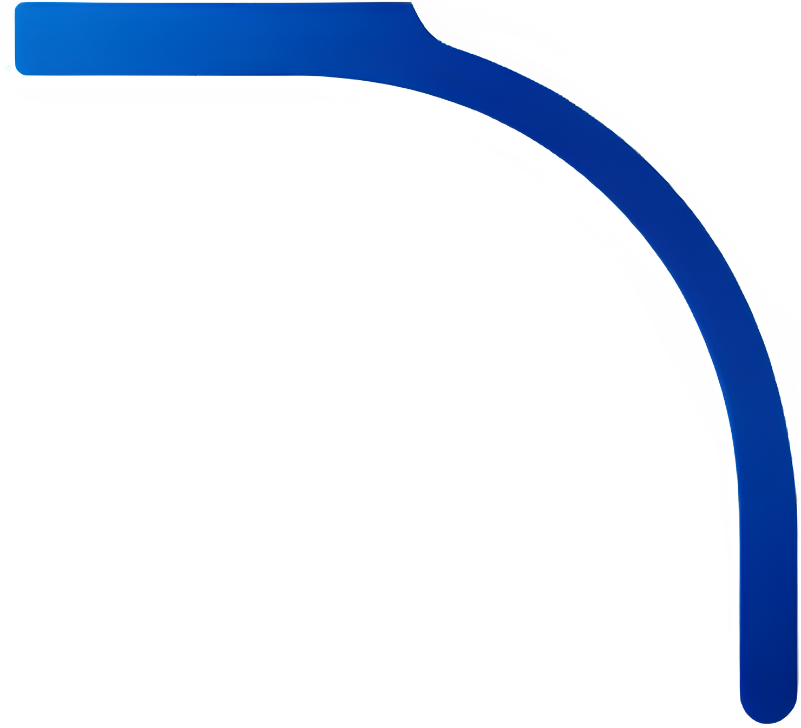
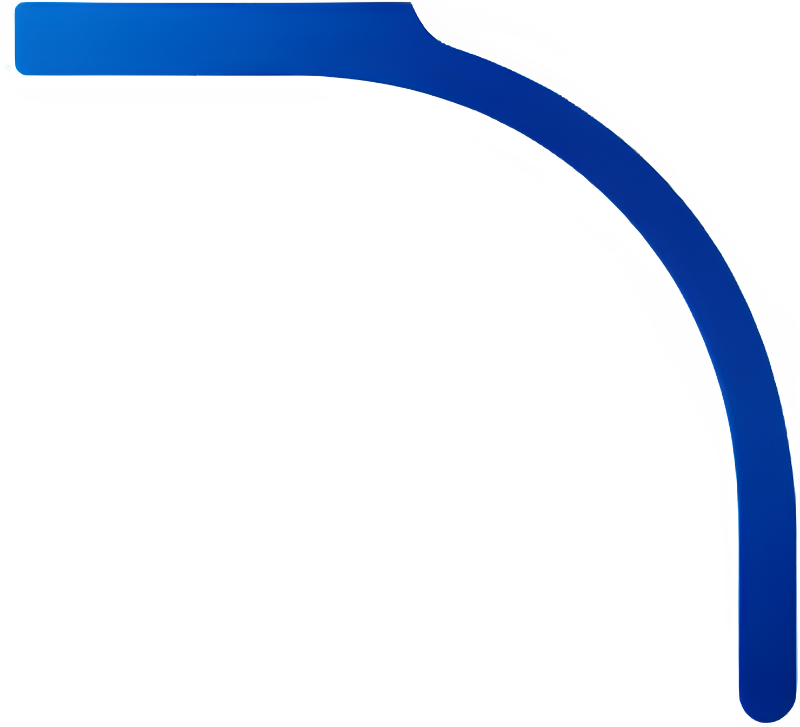

1.png)
.png) 
Направления подготовки Высшей ИТ-школы
Разработка программного обеспечения информационных систем
Сфера деятельности ИТ-специалиста широка и разнообразна: разработчики программного обеспечения проводят исследования, анализируют и оценивают требования к текущим или новым программным приложениям и операционным системам и проектируют, разрабатывают, испытывают и поддерживают программные решения в соответствии с такими требованиями.

Информационные технологии в медиаиндустрии
Современная медиаиндустрия – это активно развивающаяся сфера, включающая в себя производство, хранение и распространение различных видов информации. К медиаиндустрии относится вещательная теле- и радиоиндустрия, музыкальная индустрия, интернет-индустрия, индустрия печати, компьютерных программ и игр.
Поддержка и развитие ИТ-инфраструктуры компаний
В процессе обучения студенты получают знания и навыки, которые позволят им принимать участие в проектах по цифровой трансформации компаний: осуществлять анализ потребности в ИТ-решениях, выбирать ИТ-решения, организовывать процессы внедрения, участвовать в процессах внедрения и интеграции коомпонентов в ИТ-инфраструктуру компаний.
Разработка и внедрение интеллектуальных компонентов информационных систем
Выбрав это направление, вы получите знания по разработке интеллектуальных информационных систем. Вы научитесь анализировать большие массивы данных (Big Data), использовать машинное обучение (Machine Learning) для решения различных задач, строить нейронные сети, создавать цифровые экспертные системы, управлять физическими объектами («вещами») (IoT) и многое другое.